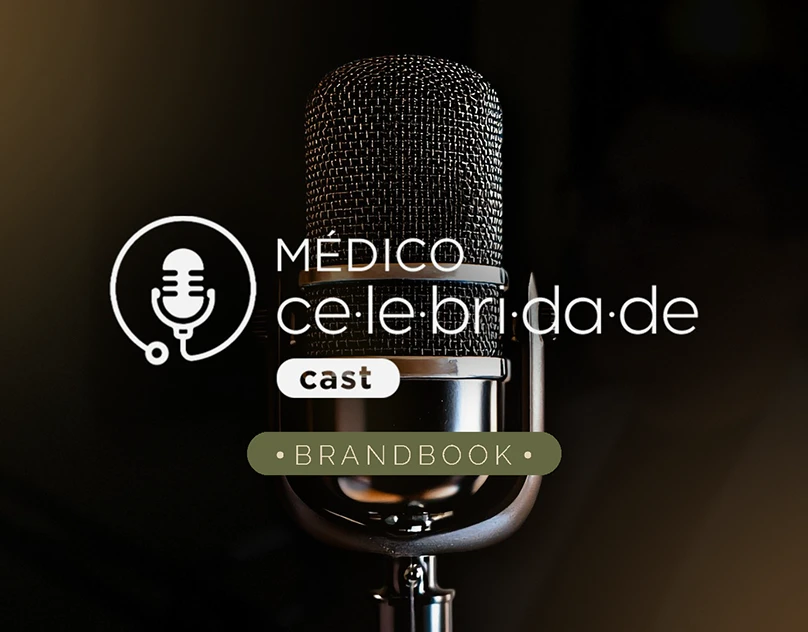
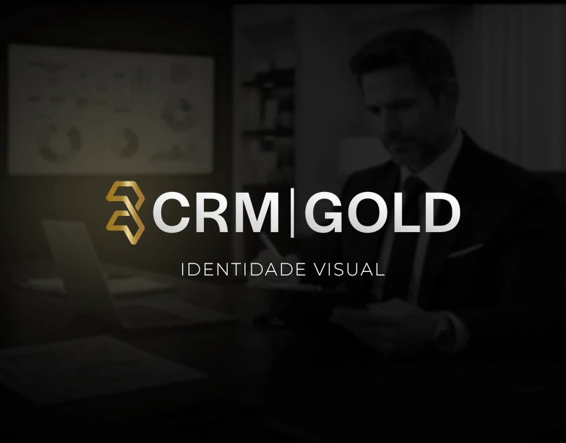

Ideias com
forma. Design
com alma.
Prazer, sou a Thaiane. Transformo ideias em
identidades, imagens e histórias que conectam.

IDENTIDADE VISUAL / CAST ↗
BRANDING / CRMGOLD ↗Do conceito
ao primeiro olhar.
Identidades que expressam. Peças que comunicam.
Conheça alguns dos meus trabalhos.
6 projetos exibidos
Olhar curioso.
Mãos criativas.
Muito prazer.
Sou Thaiane Graziele da Silva Siao, designer gráfica formada pelo Centro Universitário de Belo Horizonte — UniBH, desde 2019.
Meu trabalho passa pela criação de peças gráficas, manipulação de imagens e edição de vídeo. Entre formas, cores e movimento, dou espaço para cada ideia encontrar sua própria expressão.
O que podemos
criar juntos?
Cada projeto pede um novo olhar.
Estas são algumas formas de dar vida ao seu.
01Identidade visual
+
Uma linguagem visual para traduzir a personalidade da sua marca. Logotipo, cores, tipografia e aplicações que conversam entre si.
02Social media & campanhas
+
Peças gráficas e anúncios para redes sociais, campanhas, eventos e lançamentos. Design pensado para comunicar sua mensagem em cada formato.
03Edição de vídeo
+
Imagens, ritmo e narrativa para transformar suas ideias em conteúdo audiovisual. Edição que dá movimento à comunicação.
04Manipulação de imagens
+
Composição e tratamento de imagens para explorar novas possibilidades visuais em peças gráficas e materiais de comunicação.
Vamos fazer
algo marcante?
↗Me conte sobre sua ideia.
Vamos descobrir as possibilidades.